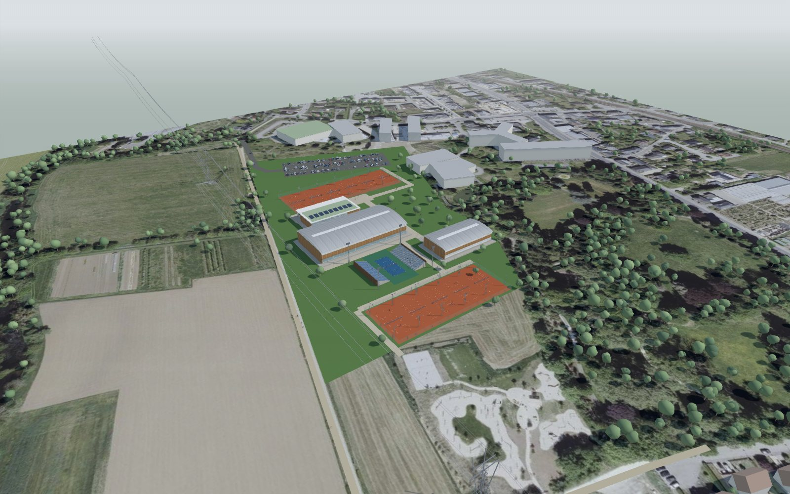
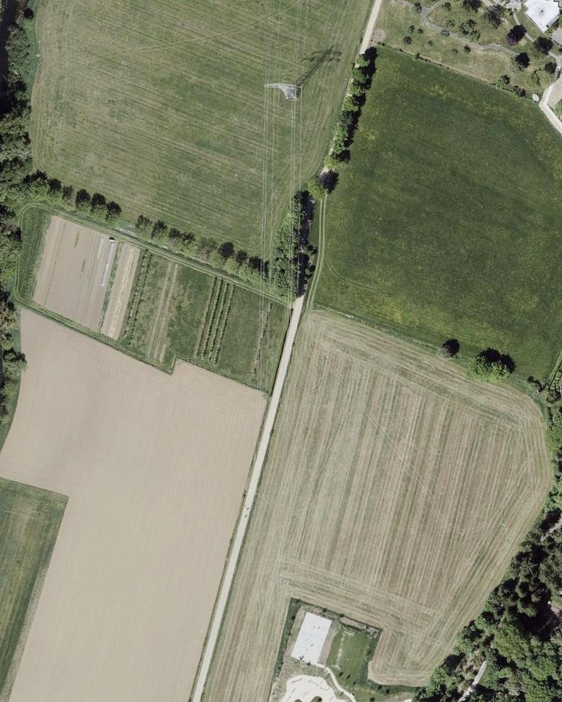
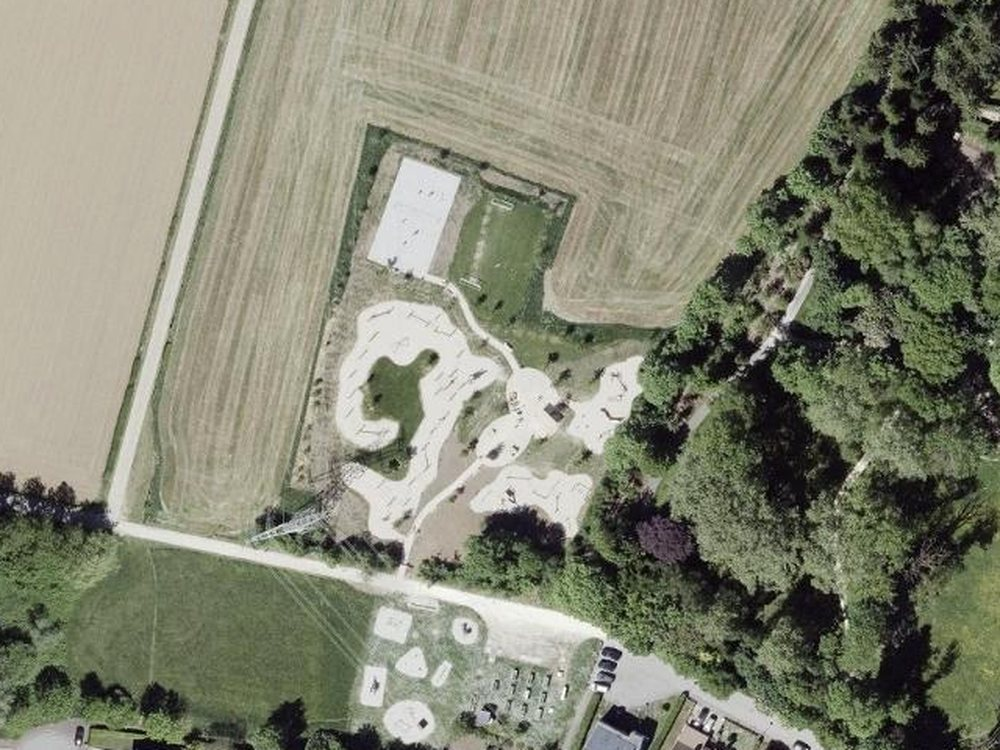
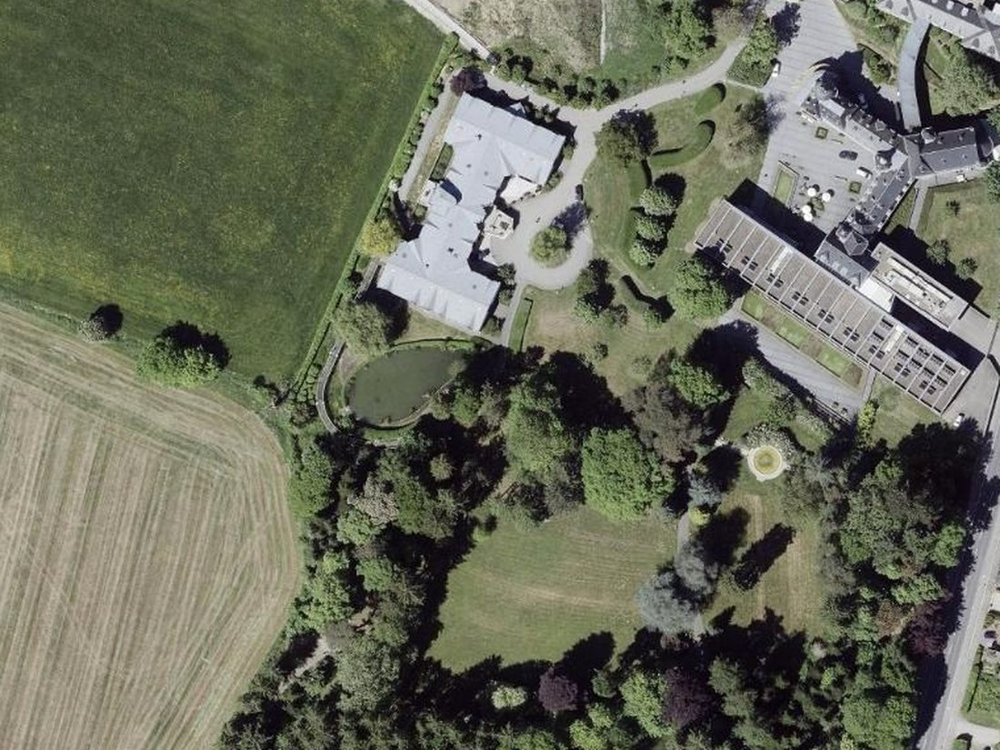
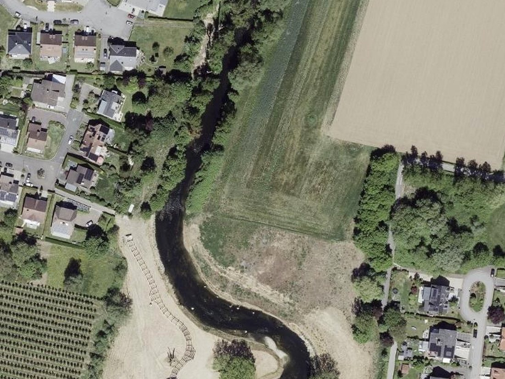
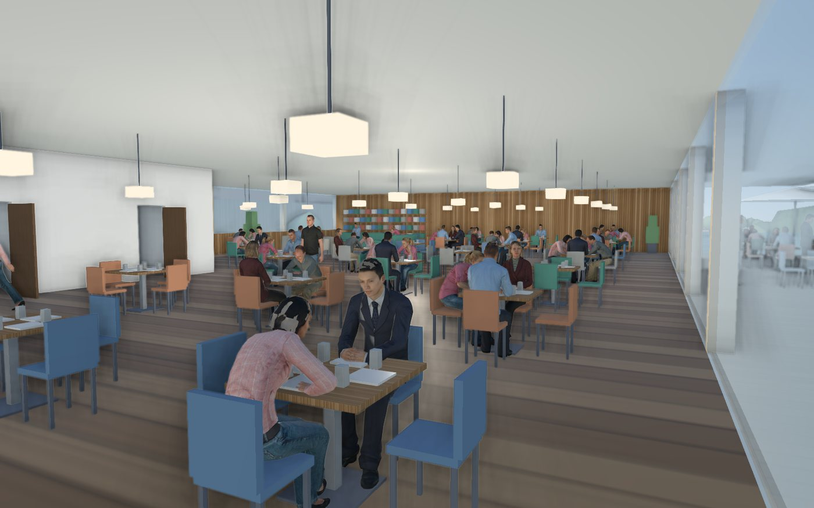
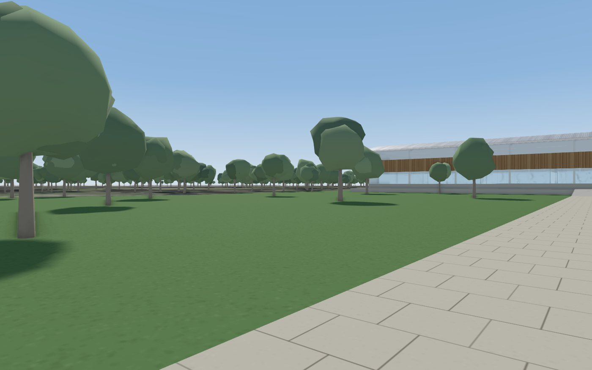
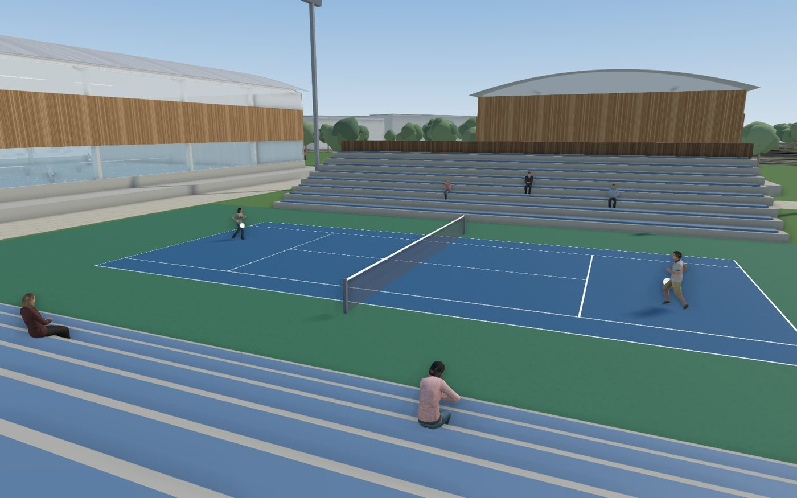

Du sport pour les écoles
En journée, aux heures creuses, les courts et les halls seraient libres pour les classes et les maisons relais de la commune.

Une proposition pour le terrain réservé aux équipements publics, entre Steinsel et Heisdorf : des courts, du padel et un club-house ouverts à tous, à côté de l’aire de jeux, de la piste cyclable et du CIPA.
Le plan d’aménagement de la commune réserve ce terrain aux équipements publics. Il est déjà entouré d’une aire de jeux, d’une piste cyclable et d’un CIPA. L’idée s’appuie sur eux.

ConservéeElle longe tout le terrain, du nord au sud. Elle deviendrait l’entrée du campus, à vélo et à pied.

ConservésIls resteraient tels quels, à la pointe sud. Une allée les relierait aux courts.

VoisinLes résidents seraient à quelques pas des courts et de la terrasse.

VoisineLa rivière passe à l’ouest. Ses crues atteignent le terrain : c’est la première question à étudier.
Six raisons de regarder l’idée de plus près.
En journée, aux heures creuses, les courts et les halls seraient libres pour les classes et les maisons relais de la commune.
Une école de tennis pour les enfants, des courts à réserver à l’heure, du padel pour débuter. On viendrait jouer sans être membre.

Le restaurant et la terrasse du club-house donneraient sur les courts. Ils accueilleraient aussi les promeneurs, les cyclistes, les familles de l’aire de jeux et les résidents du CIPA.
Deux halls couverts, l’un pour le tennis, l’autre pour le padel, prendraient le relais des courts extérieurs en hiver et les jours de pluie.
La piste cyclable mène à l’entrée. Steinsel et Heisdorf sont à distance de marche.

Le campus se servirait du parking en construction au nord du terrain, et de sa nouvelle route. La place ainsi épargnée devient un jardin.
Quelques vues tirées de la maquette. Chacune s’ouvre en grand dans la maquette, où l’on peut se promener, jusque dans le club-house.

Le court central et ses gradins, entre le hall de tennis et le hall de padel.
Images de synthèse indicatives. Elles montrent des volumes et une implantation possible, pas un projet d’architecte. Le parking public et la route en construction sont dessinés de façon schématique, l’aménagement intérieur du club-house est une suggestion.
Le terrain a été repéré sur les cartes publiques, rien de plus. Avant toute étude, voici les questions que l’idée pose.
Le terrain est réservé aux équipements d’utilité publique. Un campus n’y a de sens que si la commune le souhaite et le porte.
À déciderPresque tout le terrain est inondable lors des grandes crues. Il faudrait l’avis de l’Administration de la gestion de l’eau.
À étudierLe terrain est partagé entre plusieurs parcelles. Leurs propriétaires ne sont pas connus de l’auteur de cette page.
À vérifierElle suit la limite ouest. Les distances à respecter seraient à demander au gestionnaire du réseau.
À vérifierLe bruit et l’éclairage des courts seraient à étudier vis-à-vis du CIPA et de la cité.
À étudierUn équipement public de plus, à côté de ceux qui y sont déjà : l’aire de jeux, la piste cyclable et le CIPA.